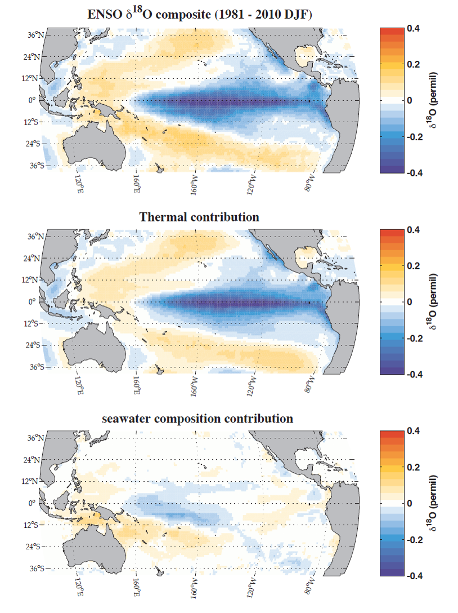

The Tropical Pacific exerts a significant influence on the global climate, yet we know little about how it would respond to external forcings. Specifically, the relationship between El Nino-Southern Oscillation (ENSO), the seasonal cycle, and natural forcings remains an open-end question. The answer would be key to determine the spread in twenty-first century climate projections.
In this project I was in charge of the compilation and evaluation of GCM simulations. Using a bivariate forward model, synthetic coral (pseudocoral) records were first generated from nine GCM simulations of temperature and salinity. I then applied a Monte Carlo block bootstrap resampling method to the pseudocoral records and computed ENSO variability (using a 2-7 year bandpass filter) and seasonal cycle amplitude from the resampled series. To put mid-Holocene values in the context, I computed ratios bewteen mid-Holocene and pre-industrial runs.
Comparing the results with observations treated with similar methods, this investigation suggests reductions in ENSO variability and increases in seasonality in mid-Holocene, and that these fluctuations do not come from radiative forcing changes, which the GCMs tend to exaggerate.
